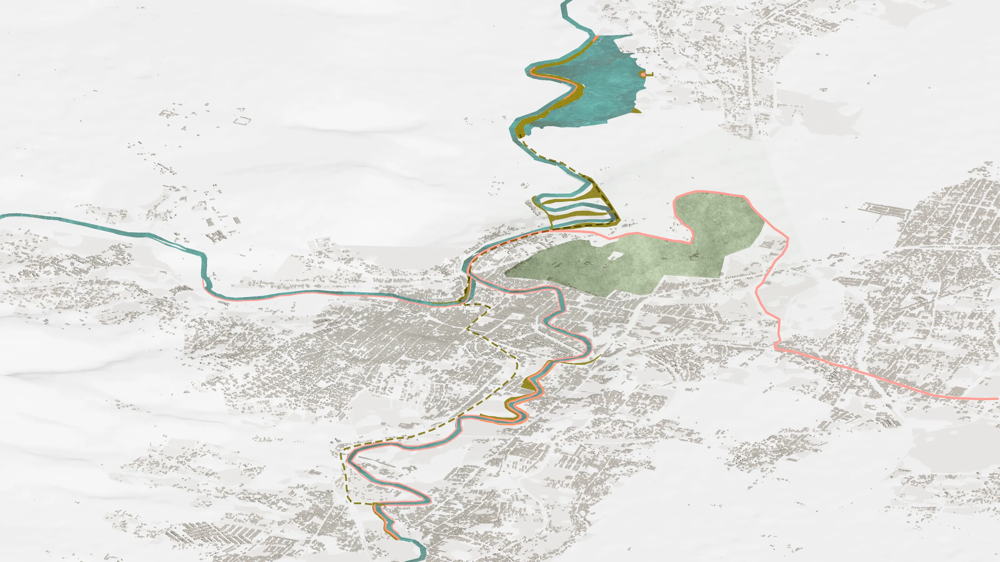
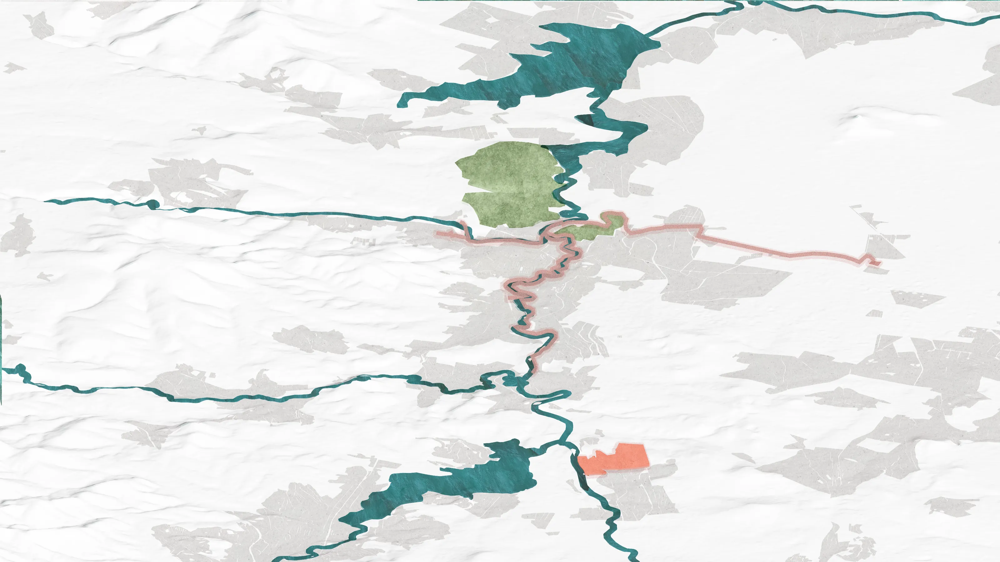
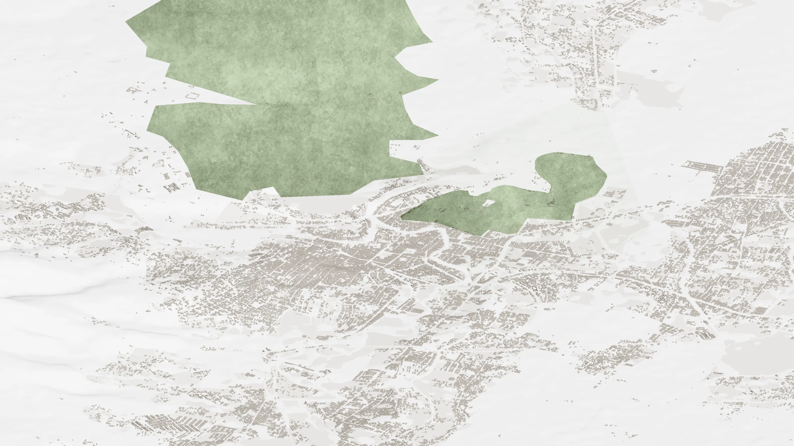
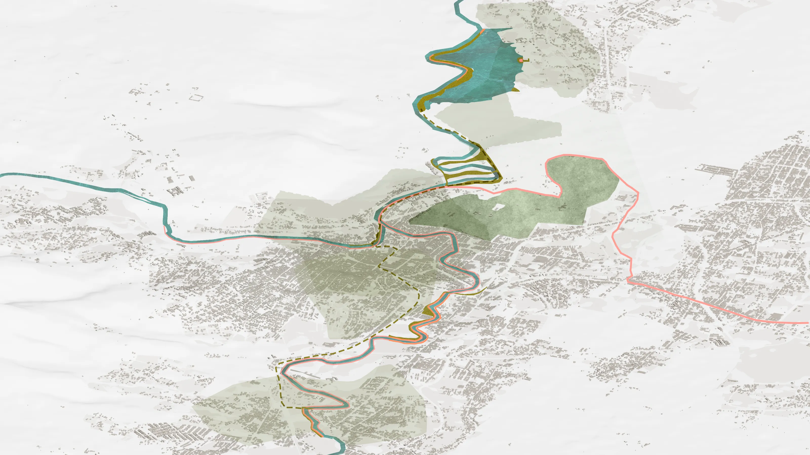
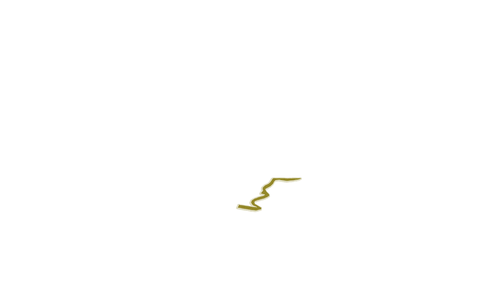
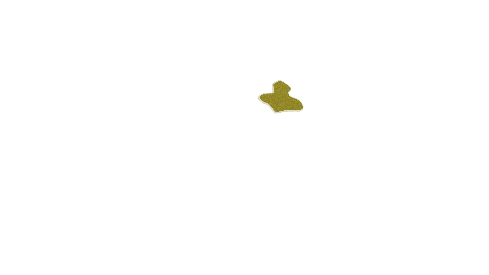
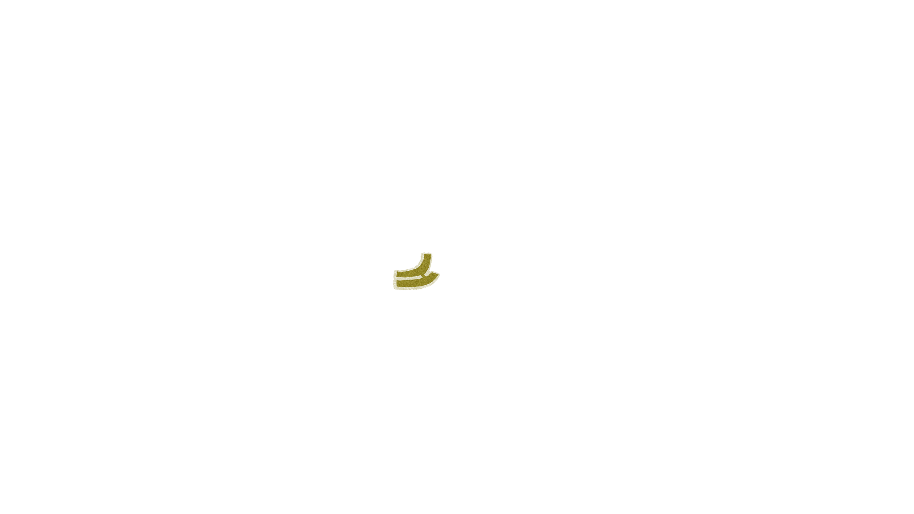
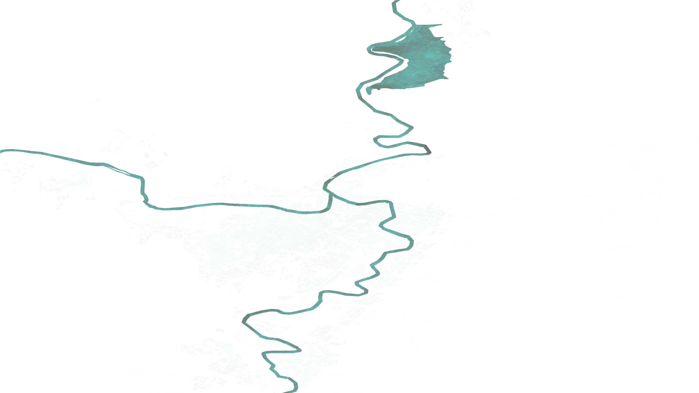
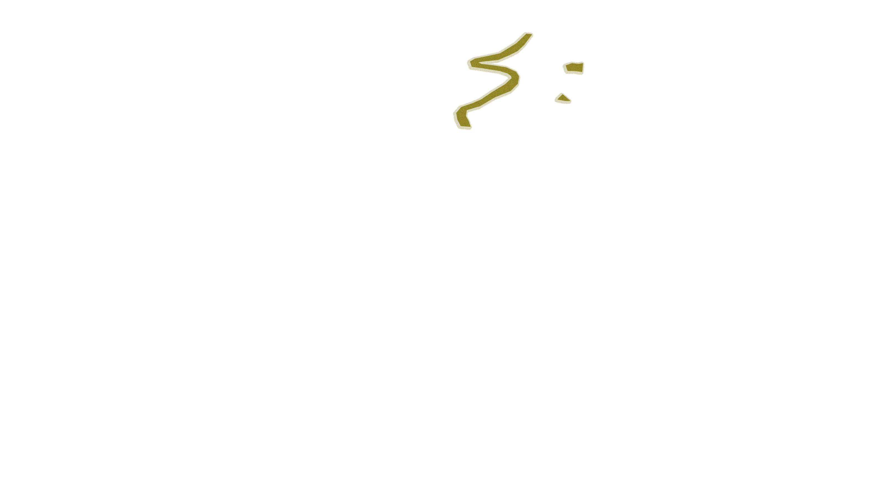

Por proyecto
Cuatro mensajes, 37 proyectos
Aquí está cada proyecto con su mapa, sus fotos y su avance. Elige un mensaje o sigue bajando.
$1,478 MDPinvertidos en 2025 y 2026
- Semarnat
- Conagua
- Profepa
- Conafor
- Conanp
- Gobierno de Hidalgo
Índice
Elige cómo quieres participar.









Aquí está cada proyecto con su mapa, sus fotos y su avance. Elige un mensaje o sigue bajando.
Existen tres fuentes principales de contaminación del río que estamos atendiendo en este proyecto:
Históricamente la PTAR Atotonilco trataba 31 m³/s en promedio. En 2026, incrementamos el caudal tratado a 38 m³/s y, a partir de 2027, la PTAR Atotonilco va a tratar todo el drenaje del río en temporada de secas.
Todo el drenaje de la zona metropolitana de Tula se vierte al río sin tratamiento. El gobierno del estado de Hidalgo construye 35 km de colectores que van a captar 72 descargas y enviarlas a la PTAR de CFE para su tratamiento. Los primeros 10 km de colectores y el cárcamo de bombeo ya están construidos.
Durante este sexenio, la Conagua y Profepa van a inspeccionar al menos dos veces a todas las empresas que descargan al río Tula y sus tributarios para asegurar que no contaminen el río. A la fecha, hemos hecho 115 inspecciones y estamos capacitando y certificando a 29 industrias para mejorar sus procesos.
Para conocer a detalle la calidad del río, estamos realizando 3 campañas de monitoreo manual cada año en más de 95 sitios. Adicionalmente, estamos instalando 5 estaciones de monitoreo automático para conocer la calidad del río en tiempo real. Todos estos datos se van a visualizar en el Centro de Vigilancia del Agua que estamos construyendo en la PTAR Atotonilco y vas a poder visitar a partir de 2027.
En septiembre de 2021, el agua del río inundó la ciudad de Tula. Miles de familias perdieron sus pertenencias y hubo personas que fallecieron. Estamos implementando una gran diversidad de proyectos para proteger a las familias de Tula.
Hoy el río aguanta más: en 2021 su capacidad era de 250 m³/s y la capacidad de diseño de las obras de 2024 es de 500 m³/s. El máximo registrado desde 2021 fue de 330 m³/s (2024) y no hubo inundación.
Las zonas del río altamente erosionadas representan un riesgo para la población que vive cerca. Desde 2025, empezamos a estabilizar los 4.5 km de taludes críticos de las zonas urbanas.
Cuando el río está azolvado, lleno de lodo y basura, hay menos espacio para que el agua pueda fluir sin desbordarse. En 2025, desazolvamos 3.9 km de río, removiendo más de 176,000 ton de sedimentos, basura y escombros.
Instalamos 21 estaciones para conocer cuánta agua fluye en cada segmento del río cada 5 minutos. Esta información va a permitir operar el sistema de drenaje y presas de forma eficiente y segura.
Para regresarle la vida a un río, es necesario recuperar ecosistemas como cuerpos de agua, humedales, riberas y zonas boscosas en la cuenca alta.
A la fecha, hemos saneado 1,600 árboles ribereños para quitarles heno motita, una planta que crece sobre las ramas, y ramas muertas. Adicionalmente, hemos plantado 300 árboles de 3 m en la zona urbana de Tula. Junto con Conafor, estamos trabajando en limpiar, sanear o reforestar las riberas del río desde su nacimiento hasta la presa Endhó.
La laguna de Bojay es un cuerpo de agua de 55 hectáreas alimentado por manantiales que actualmente se contamina por agua del río Tula. Empezamos a trabajar en 2026 en la recuperación del manantial. En 2027, vamos a rehabilitar el bordo para aislar la laguna del río Tula y contar con un cuerpo de agua limpia y con vida acuática a 2 km de la ciudad de Tula. Adicionalmente, vamos a construir un sistema de humedales para tratar el drenaje de la comunidad que actualmente se vierte a la laguna.
A inicios de sexenio, existían solo 100 ha de áreas naturales protegidas en la cuenca. A la fecha, la Conanp ha certificado 1,700 ha de Áreas Destinadas Voluntariamente a la Conservación generando espacios protegidos de la mano de la comunidad. Adicionalmente, la Conafor está restaurando 2,152 ha de suelo forestal junto con ejidos de la cuenca.
En la ciudad de Tula estamos construyendo 5 proyectos de espacio público junto al río.
En cada uno de estos sitios la población podrá disfrutar de vegetación nativa, espacios seguros para convivir, ejercitarse o divertirse y agua limpia en el río Rosas, los humedales de Tres Culturas y la laguna de Bojay.
Elige una meta para ver dónde se trabaja.
Para seguir explorando
Las cifras son promedios o valores máximos de los periodos indicados y pueden actualizarse conforme se publiquen nuevos datos.